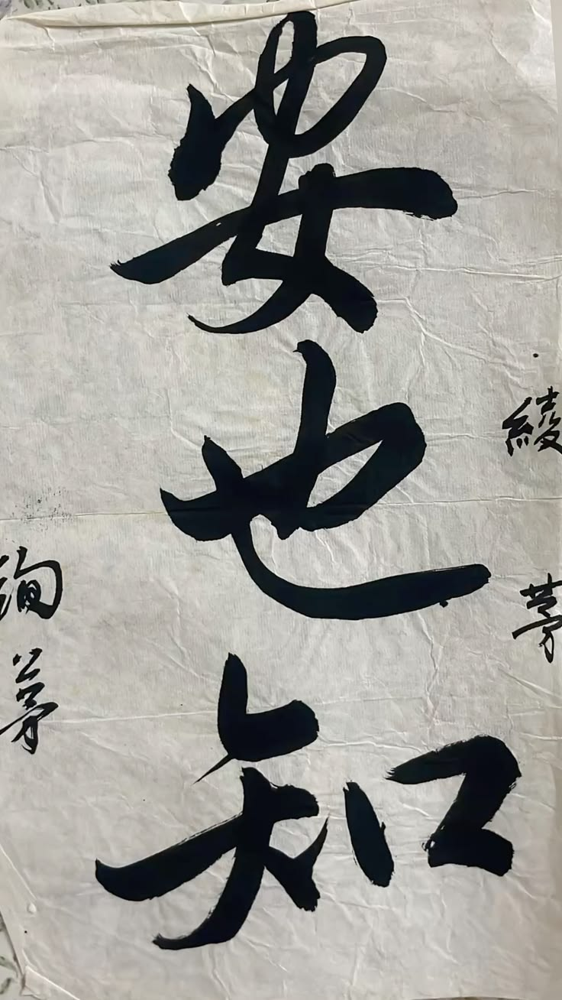

ML · Research
Groundwater Fluoride Risk Framework
A socioeconomic vulnerability-weighted ML model for fluoride contamination in rural India. Built for the people nobody's building for. IEEE SiMPaCT 2026.
View Paper →
書道 — Yokohama Hiranuma High School, 2021
Literary technologist. Ink artist. ML researcher.
I wrote this the year Japan changed me.
I've been writing since I was ten and I haven't stopped. I spent ten months in Japan on the Asia Kakehashi Project, came back fluent in a different kind of attention, and channelled it into code, ink, and obsessive research on problems nobody else wants to touch.
Third-year CSE at Amity University Punjab. Published author. Manga-influenced illustrator. Somewhere between Dostoevsky and machine learning, I found the intersection I want to live in forever.
that's me :)

Yokohama, 2021 ♡

shodō class ☁

somewhere good
A socioeconomic vulnerability-weighted ML model for fluoride contamination in rural India. Built for the people nobody's building for. IEEE SiMPaCT 2026.
View Paper →Multilingual waste classification — Hindi, Punjabi, English — with audio output for low-literacy users. 69.3% test accuracy on TrashNet subset.
View Project →Hands-free communication device for paralyzed patients. Pitch deck for Team VEDA. Newton's Law aesthetic DNA — sand, teal, gold.
View Deck →Two web toys: a vintage typewriter letter-writing app (with shiba animation) and an Omikuji fortune slip generator. Because why not.
Try It →Ten months. One scholarship. A hundred things I can't explain in English.

first day ✦

konbini run at midnight

Hiranuma HS

somewhere in Yokohama

last month

untitled, 2024

micron on cartridge

manga study
I draw with Micron pens. Manga-influenced, ink-heavy, usually late at night. Find more on Pinterest.
Research collabs, writing projects, creative chaos, or just saying hi.